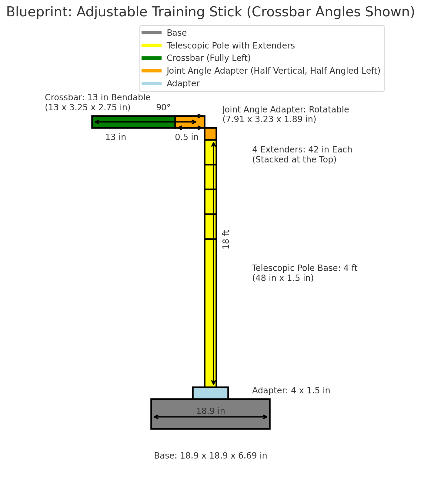

Raise the Arc
Players train the ball to clear the guide, building a higher trajectory and softer entry angle.
INNOVATION
The Archer is a basketball training tool designed to raise shooting arc, sharpen touch, and create repeatable mechanics through visible feedback. Built from years of player development work, it gives athletes a clear target for improving shot trajectory, finishing touch, and daily skill accountability.

TRAINING TOOL
The Archer gives players a visible target for creating better shot trajectory. By forcing the ball to clear an adjustable guide, athletes learn to shoot with more arc, better touch, and cleaner repeatable mechanics.

HOW IT WORKS
Players train the ball to clear the guide, building a higher trajectory and softer entry angle.
The tool makes misses and flat reps visible, so correction happens during the workout.
Arc, release point, and touch are connected to a standard the player can feel and repeat.
The same feedback can support shooting workouts, finishing touch, and post-player development.

PLAYER DEVELOPMENT
The Archer was built from daily player development work. It supports shooting workouts, finishing touch, post-player skill work, and repeatable feedback that players can understand immediately.
VISUAL GALLERY


VIDEO GALLERY
PORTFOLIO VALUE
The Archer represents the same approach used throughout the portfolio: identify a player development problem, build a clear teaching solution, track the result, and create a repeatable system athletes can use every day.
Flat trajectory, inconsistent touch, and unclear release feedback.
An adjustable guide turns arc and touch into a visible daily standard.
The same feedback supports workouts, post touch, finishing, and shot preparation.
NEXT STEP
Review the player development systems, product overview, and visual proof connected to Coach Fogarty's innovation work.